The New York Times has a wonderful compilation of United States on the novel coronavirus. The data update automatically so the following graphics were generated with data retrieved at 2020-11-30 16:51:46.
options(scipen=9)
library(tidyverse); library(hrbrthemes); library(patchwork); library(plotly); library(ggdark); library(ggrepel); library(lubridate)
CTP <- read.csv("https://covidtracking.com/api/v1/states/daily.csv")
state.data <- read_csv(url("https://raw.githubusercontent.com/nytimes/covid-19-data/master/us-states.csv"))
Rect.NYT <- complete(state.data, state,date)
# Create new cases and new deaths
Rect.NYT <- Rect.NYT %>% group_by(state) %>% mutate(New.Cases = cases - lag(cases, order_by = date), New.Deaths = deaths - lag(deaths, order_by = date)) %>% ungroup()
# Total the county data
NYT.Totals <- Rect.NYT %>% group_by(date) %>% summarise(Deaths = sum(deaths, na.rm=TRUE), New.Deaths = sum(New.Deaths, na.rm = TRUE), Cases = sum(cases, na.rm=TRUE), New.Cases = sum(New.Cases, na.rm = TRUE)) %>% ungroup()
# Load patchwork
library(patchwork)
# Build a plot of deaths
plot1 <- NYT.Totals %>% ggplot(., aes(x=date, y=Deaths)) + geom_line() + labs(title="Deaths") + dark_mode()
# Build a plot of new deaths
plot2 <- NYT.Totals %>% ggplot(., aes(x=date, y=New.Deaths)) + geom_line() + labs(title="New Deaths") + geom_smooth(method="loess", span=0.2, fill="white") + dark_mode()
# Build a plot of cases
plot3 <- NYT.Totals %>% ggplot(., aes(x=date, y=Cases)) + geom_line() + labs(title="Cases") + dark_mode()
# Build a plot of new cases
plot4 <- NYT.Totals %>% ggplot(., aes(x=date, y=New.Cases)) + geom_line() + labs(title="New Cases") + geom_smooth(method="loess", span=0.2, fill="white") + dark_mode()
(plot1 + plot2) / (plot3 + plot4)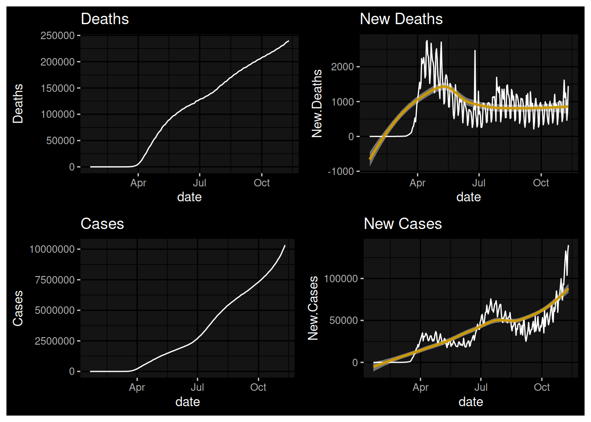
The pandemic has ebbed and flowed since March in the United States. After settling, as predicted, during the the summer months, the arrival and Fall has seen the onset of another wave.
What month did the new (daily) case maximum occur?
Rect.NYT %>% group_by(state) %>% slice_max(New.Cases, n=1) %>% mutate(Month = month(date, label=TRUE)) %$% table(Month) %>% data.frame() %>% ggplot() + aes(x=Month, y=Freq, label=Freq) + geom_col() + geom_text(color="red") + labs(y="Number of States with New Case Maxima") + theme_ipsum()## Warning in grid.Call(C_stringMetric, as.graphicsAnnot(x$label)): font family not
## found in Windows font database
## Warning in grid.Call(C_stringMetric, as.graphicsAnnot(x$label)): font family not
## found in Windows font database## Warning in grid.Call(C_textBounds, as.graphicsAnnot(x$label), x$x, x$y, : font
## family not found in Windows font database
## Warning in grid.Call(C_textBounds, as.graphicsAnnot(x$label), x$x, x$y, : font
## family not found in Windows font database
## Warning in grid.Call(C_textBounds, as.graphicsAnnot(x$label), x$x, x$y, : font
## family not found in Windows font database
## Warning in grid.Call(C_textBounds, as.graphicsAnnot(x$label), x$x, x$y, : font
## family not found in Windows font database
## Warning in grid.Call(C_textBounds, as.graphicsAnnot(x$label), x$x, x$y, : font
## family not found in Windows font database
## Warning in grid.Call(C_textBounds, as.graphicsAnnot(x$label), x$x, x$y, : font
## family not found in Windows font database## Warning in grid.Call.graphics(C_text, as.graphicsAnnot(x$label), x$x, x$y, :
## font family not found in Windows font database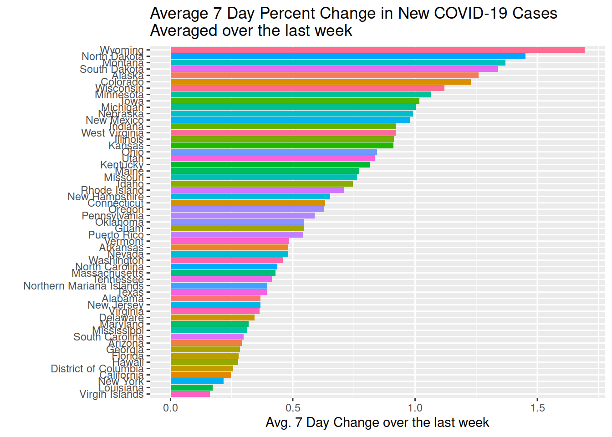
What month did the new (daily) death maximum occur in?
Rect.NYT %>% group_by(state) %>% slice_max(New.Deaths, n=1) %>% mutate(Month = month(date, label=TRUE)) %$% table(Month) %>% data.frame() %>% ggplot() + aes(x=Month, y=Freq, label=Freq) + geom_col() + geom_text(color="red") + labs(y="Number of States with New Death Maxima") + theme_minimal()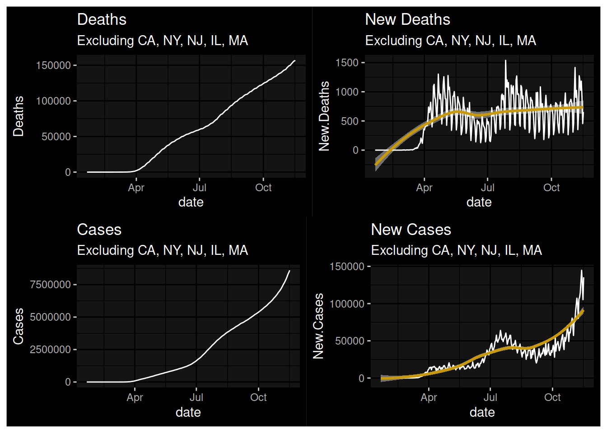
Here I will use a seven day delay to isolate current rates of growth.
NYTD1 <- Rect.NYT %>% group_by(state) %>% mutate(Cases.7DD = (cases - lag(cases, 7, order_by = date))/ lag(cases, 7, order_by = date), Deaths.7DD = (deaths - lag(deaths, 7, order_by = date))/ lag(deaths, 7, order_by = date))
NYTD1 %>% filter(date > Sys.Date()-8) %>% mutate(Avg.7DD = mean(Cases.7DD, na.rm=TRUE)) %>% top_n(25, Avg.7DD) %>% ggplot(., aes(x=forcats::fct_reorder(state, Avg.7DD), y=Avg.7DD, fill=state)) + geom_col() + coord_flip() + guides(fill=FALSE) + labs(x="", y="Avg. 7 Day Change over the last week", title="Average 7 Day Percent Change in New COVID-19 Cases \nAveraged over the last week")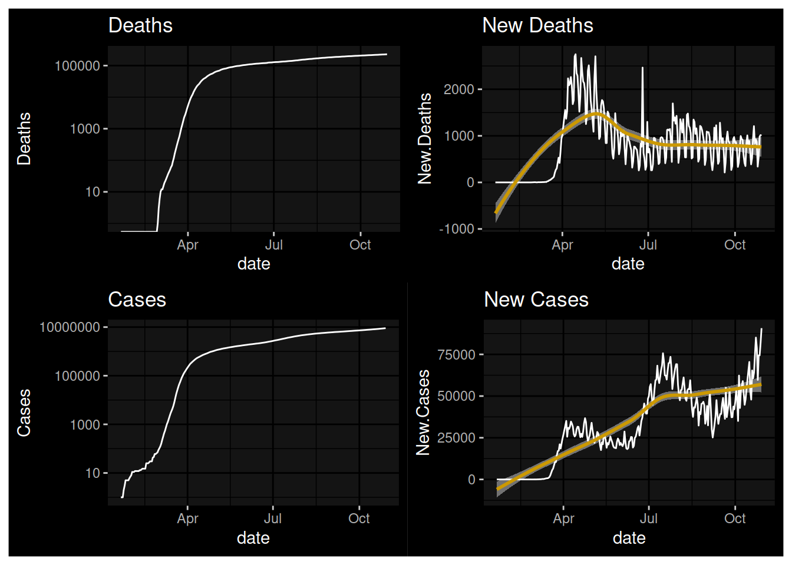
The problem was initially concentrated in New York, New Jersey, Massachusetts, California, and Illinois. How do things look if we remove those states?
NYT.Totals2 <- Rect.NYT %>% filter(!(state %in% c("California","Massachusetts","New York","New Jersey","Illinois"))) %>% group_by(date) %>% summarise(Deaths = sum(deaths, na.rm=TRUE), New.Deaths = sum(New.Deaths, na.rm = TRUE), Cases = sum(cases, na.rm=TRUE), New.Cases = sum(New.Cases, na.rm = TRUE)) %>% ungroup()
plot1a <- NYT.Totals2 %>% ggplot(., aes(x=date, y=Deaths)) + geom_line() + labs(title="Deaths", subtitle="Excluding CA, NY, NJ, IL, MA") + dark_mode()
plot2a <- NYT.Totals2 %>% ggplot(., aes(x=date, y=New.Deaths)) + geom_line() + labs(title="New Deaths", subtitle="Excluding CA, NY, NJ, IL, MA") + geom_smooth(fill="white") + dark_mode()
plot3a <- NYT.Totals2 %>% ggplot(., aes(x=date, y=Cases)) + geom_line() + labs(title="Cases", subtitle="Excluding CA, NY, NJ, IL, MA") + dark_mode()
plot4a <- NYT.Totals2 %>% ggplot(., aes(x=date, y=New.Cases)) + geom_line() + labs(title="New Cases", subtitle="Excluding CA, NY, NJ, IL, MA") + geom_smooth(fill="white") + dark_mode()
(plot1a + plot2a) / (plot3a + plot4a)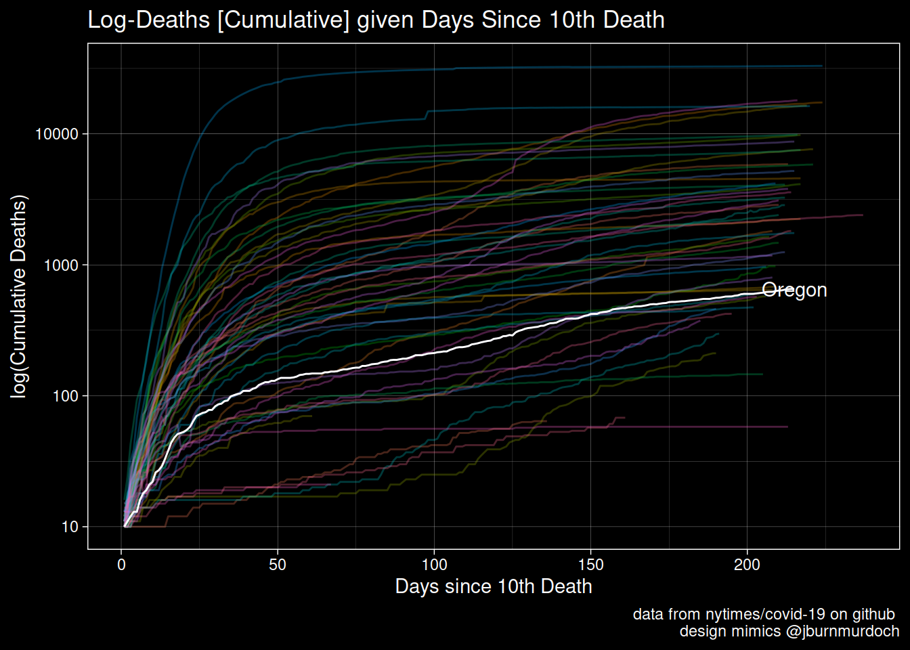
plot1 <- NYT.Totals %>% ggplot(., aes(x=date, y=Deaths)) + geom_line() + labs(title="Deaths") + scale_y_log10() + dark_mode()
plot2 <- NYT.Totals %>% ggplot(., aes(x=date, y=New.Deaths)) + geom_line() + labs(title="New Deaths") + geom_smooth(fill="white") + dark_mode()
plot3 <- NYT.Totals %>% ggplot(., aes(x=date, y=Cases)) + geom_line() + labs(title="Cases") + scale_y_log10() + dark_mode()
plot4 <- NYT.Totals %>% ggplot(., aes(x=date, y=New.Cases)) + geom_line() + labs(title="New Cases") + geom_smooth(fill="white") + dark_mode()
(plot1 + plot2) / (plot3 + plot4)## Warning: Transformation introduced infinite values in continuous y-axis## `geom_smooth()` using method = 'loess' and formula 'y ~ x'
## `geom_smooth()` using method = 'loess' and formula 'y ~ x'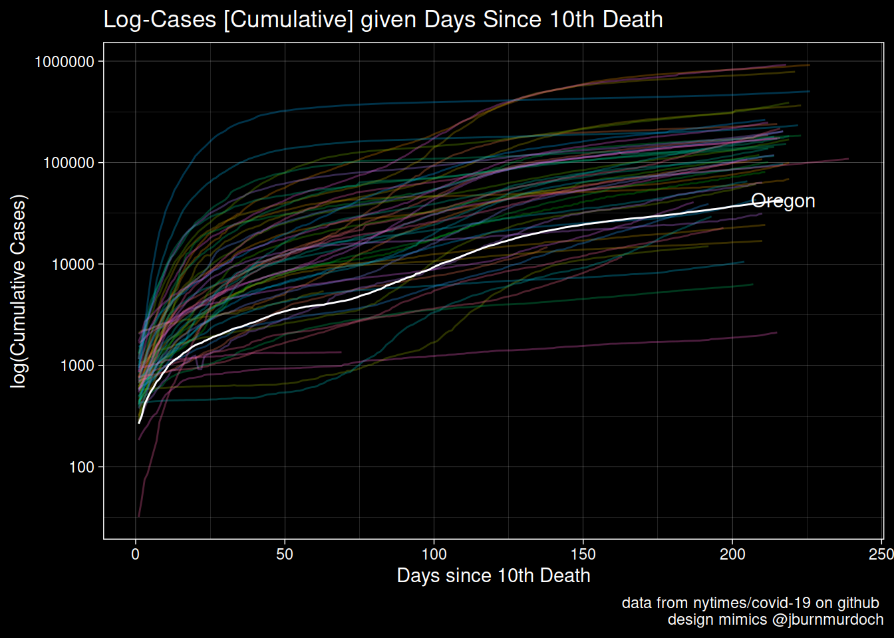
@jburnmurdoch graphics for US StatesR2.NYT <- Rect.NYT %>%
mutate(SelMe = (deaths > 9)) %>%
filter(SelMe==TRUE) %>%
group_by(state) %>%
mutate(Counter = row_number()) %>%
ungroup()
OR.R2 <- R2.NYT %>% filter(fips=="41")
OR.R2A <- R2.NYT %>% filter(fips=="41" & Counter == max(OR.R2$Counter))
PlotA <- R2.NYT %>%
ggplot(., aes(x=Counter, y=deaths, color=state)) +
geom_line(alpha=0.3) + guides(color=FALSE) +
scale_y_log10() +
geom_line(data=OR.R2, color="white") +
geom_text(data=OR.R2A, aes(x=Counter, y=deaths, label=state), color="white", inherit.aes = FALSE) +
labs(x="Days since 10th Death", y="log(Cumulative Deaths)", title="Log-Deaths [Cumulative] given Days Since 10th Death", caption = "data from nytimes/covid-19 on github \n design mimics @jburnmurdoch") +
dark_theme_linedraw()
PlotA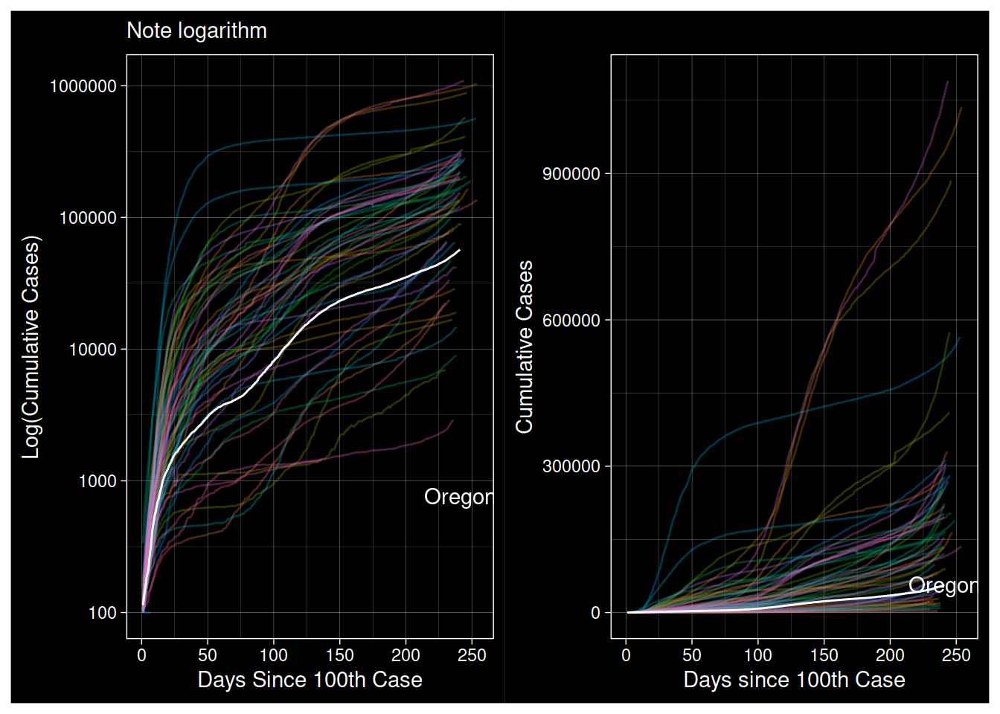
R2.NYT <- Rect.NYT %>%
mutate(SelMe = (deaths > 9)) %>%
filter(SelMe==TRUE) %>%
group_by(state) %>%
mutate(Counter = row_number()) %>%
ungroup()
OR.R2 <- R2.NYT %>% filter(fips=="41")
OR.R2A <- R2.NYT %>% filter(fips=="41" & Counter == max(OR.R2$Counter))
Plot1 <- R2.NYT %>% ggplot(., aes(x=Counter, y=cases, color=state)) +
geom_line(alpha=0.3) + guides(color=FALSE) + geom_line(data=OR.R2, color="white") +
geom_text(data=OR.R2A, aes(x=Counter, y=cases, label=state), color="white", inherit.aes = FALSE) + scale_y_log10() +
labs(x="Days since 10th Death", y="log(Cumulative Cases)", title="Log-Cases [Cumulative] given Days Since 10th Death", caption = "data from nytimes/covid-19 on github \n design mimics @jburnmurdoch") +
dark_theme_linedraw()
Plot1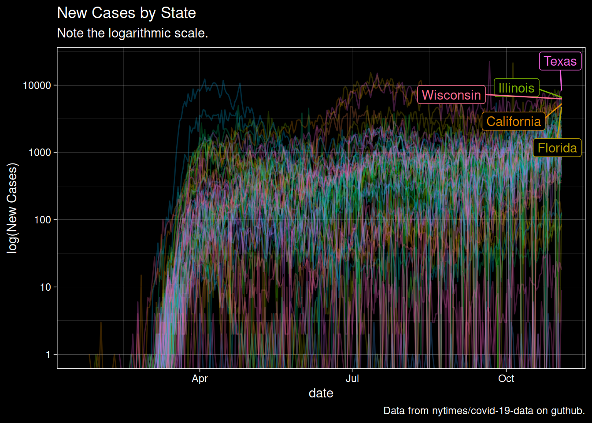
options(scipen=8)
R2.NYT <- Rect.NYT %>%
mutate(SelMe = (cases > 99)) %>%
filter(SelMe==TRUE) %>%
group_by(state) %>%
mutate(Counter = row_number()) %>%
ungroup()
OR.R2 <- R2.NYT %>% filter(fips=="41")
OR.R2A <- R2.NYT %>% filter(fips=="41") %>% filter(date == max(date))
Plot1 <- R2.NYT %>% ggplot(., aes(x=Counter, y=cases, color=state)) +
geom_line(alpha=0.3) +
guides(color=FALSE) +
scale_y_log10() +
geom_line(data=OR.R2, color="white") +
geom_text(data=OR.R2A, aes(x=Counter, y=deaths, label=state), color="white", inherit.aes = FALSE) +
dark_theme_linedraw() +
labs(subtitle="Note logarithm", x="Days Since 100th Case", y="Log(Cumulative Cases)")
Plot2 <- R2.NYT %>%
ggplot(., aes(x=Counter, y=cases, color=state)) +
geom_line(alpha=0.3) +
guides(color=FALSE) +
# scale_y_log10() +
geom_line(data=OR.R2, color="white") +
geom_text(data=OR.R2A, aes(x=Counter, y=cases, label=state), color="white", inherit.aes = FALSE) +
dark_theme_linedraw() +
labs(x="Days since 100th Case", y="Cumulative Cases")
Plot1 + Plot2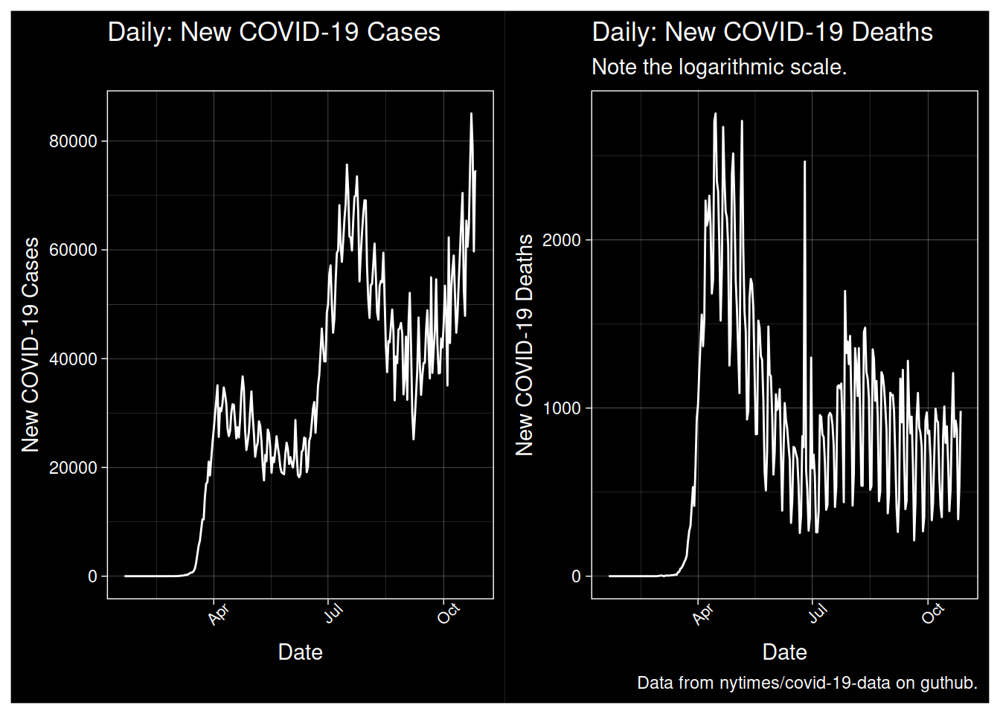
Let me first track the incidence of new cases by state. There is no particularly good way to visualize this because New York is wildly different.
WCStates <- Rect.NYT %>% filter(date==max(date)) %>% top_n(5, wt=New.Cases) %>% mutate(Top5 = 1)
Rect.NYT %>% ggplot(., aes(x=date, y=New.Cases, color=state)) +
geom_line(alpha=0.25) +
geom_label_repel(data=WCStates, aes(label=state), inherit.aes = TRUE) +
guides(color=FALSE) +
scale_y_log10() +
labs(title="New Cases by State", y="log(New Cases)", subtitle="Note the logarithmic scale.", caption="Data from nytimes/covid-19-data on guthub.") +
dark_theme_linedraw()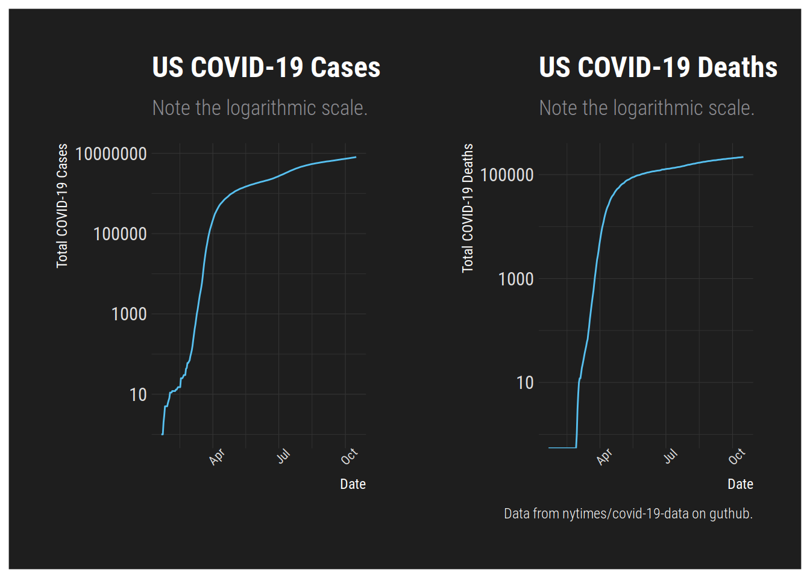
library(patchwork)
ggplot(NYT.Totals, aes(x=date, y=New.Cases)) + geom_line() + labs(x="Date", y="New COVID-19 Cases", title="Daily: New COVID-19 Cases") + dark_theme_linedraw() + theme(axis.text.x = element_text(size=8, angle=45))+ ggplot(NYT.Totals, aes(x=date, y=New.Deaths)) + geom_line() + labs(x="Date", y="New COVID-19 Deaths", title="Daily: New COVID-19 Deaths", subtitle="Note the logarithmic scale.", caption="Data from nytimes/covid-19-data on guthub.") + dark_theme_linedraw() + theme(axis.text.x = element_text(size=8, angle=45))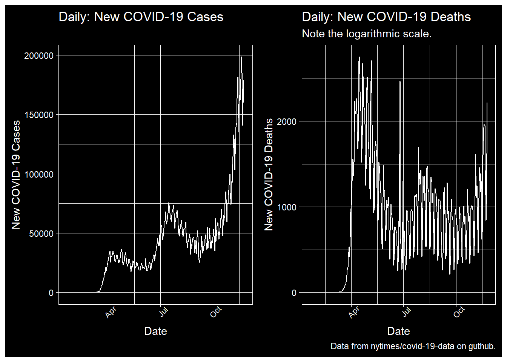
# A patchwork
ggplot(NYT.Totals, aes(x=date, y=Cases)) + geom_line() + labs(x="Date", y="Total COVID-19 Cases", title="US COVID-19 Cases", subtitle="Note the logarithmic scale.") + theme_modern_rc() + theme(axis.text.x = element_text(size=8, angle=45)) + scale_y_log10() +
ggplot(NYT.Totals, aes(x=date, y=Deaths)) + geom_line() + labs(x="Date", y="Total COVID-19 Deaths", title="US COVID-19 Deaths", subtitle="Note the logarithmic scale.", caption="Data from nytimes/covid-19-data on guthub.") + theme_modern_rc() + theme(axis.text.x = element_text(size=8, angle=45)) + scale_y_log10()## Warning: Transformation introduced infinite values in continuous y-axis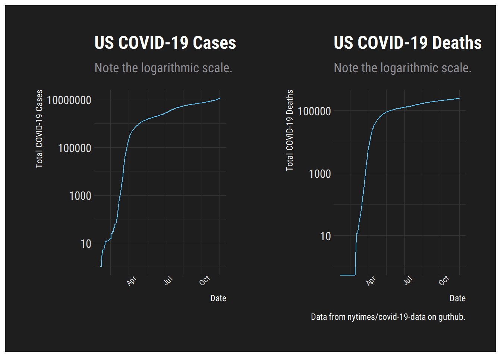
Given the data, what does the US Case Fatality Rate look like at this point? Two caveats for this. The first, uncertainty in the numerator. The number of deaths is surely undercounted, probably dramatically based on anecdotes from non-medical first responders. Second, we know the numerator is also undercounted. Assuming asymptomatic cases, the rules prohibited testing them for a substantial period of time on top of the existing scarcity of tests.
CFR <- NYT.Totals %>%
mutate(CFR = round(Deaths / Cases, digits=3)) %>% mutate(CFR.D = (CFR > 0.02)) %>%
ggplot(., aes(x=date, y=CFR)) +
geom_line() +
geom_point(aes(color=CFR.D)) +
labs(title = "Case Fatality Rate of COVID-19 in the US", subtitle="Very uncertain estimate... Numerator and denominator uncertain \n Data: NY Times GitHub", caption="Data from nytimes/covid-19-data on guthub.", color="Greater \n than 0.02") +
dark_theme_bw()
GPCFR <- ggplotly(CFR)
htmlwidgets::saveWidget(
widgetframe::frameableWidget(GPCFR), here:::here('static/img/widgets/gpcfrmap.html'))NCFR <- NYT.Totals %>%
mutate(CFR = round(New.Cases / New.Deaths, digits=3))
P1 <- NCFR %>% ggplot(., aes(x=date, y=CFR)) +
geom_line() +
labs(y="New Cases per New Death", title = "New Cases to New Deaths", subtitle="Very uncertain estimate... Numerator and denominator uncertain \n Data: NY Times GitHub", caption="Data from nytimes/covid-19-data on github.") +
dark_theme_bw()
GPNCFR <- ggplotly(P1)
htmlwidgets::saveWidget(
widgetframe::frameableWidget(GPNCFR), here:::here('static/img/widgets/gpncfrmap.html'))library(fiftystater); library(maptools); library(ggthemes); library(ggmap)
CFR2 <- Rect.NYT %>% filter(date == "2020-05-22") %>% mutate(CFR = round(deaths / cases, digits=3), State = state, state = tolower(State))
CFR2 %>% filter(!(state %in% c("puerto rico","northern mariana islands", "virgin islands", "guam"))) %>% ggplot(., aes(fill=CFR, map_id=state)) +
geom_map(map = fifty_states) +
expand_limits(x = fifty_states$long, y = fifty_states$lat) +
coord_map() + scale_fill_continuous_tableau(palette="Classic Red", guide="colourbar") + theme_map() + labs(title="US Case Fatality Rate by State: May 22")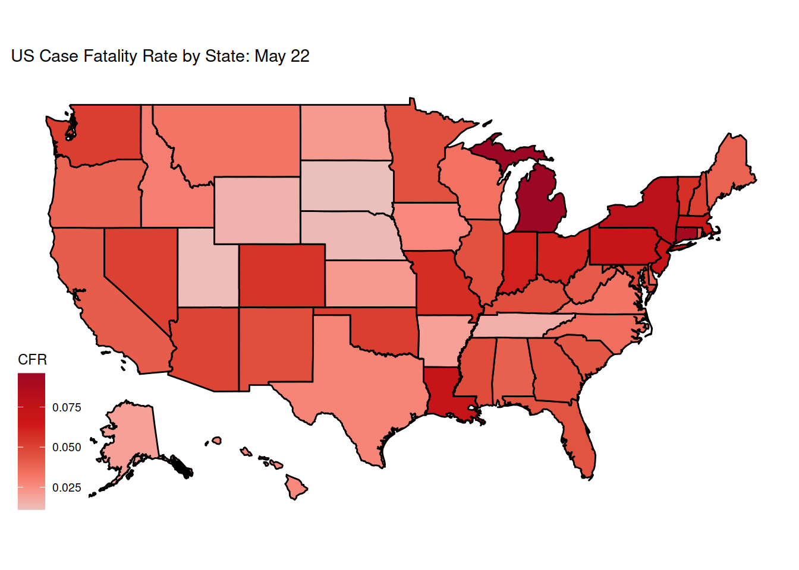
# geom_point(aes(color=CFR.D)) +
# labs(title = "Case Fatality Rate of COVID-19 in the US", subtitle="Very uncertain estimate... Numerator and denominator uncertain \n Data: NY Times GitHub", caption="Data from nytimes/covid-19-data on guthub.", color="Greater \n than 0.02") +
# dark_theme_bw()